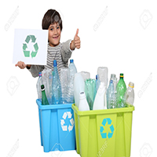

Number 1: Get Involved!
Take a few minutes to contact your political representatives and the media to tell them you want immediate action on climate change.
Number 2: Be Energy Efficient!
Change light bulbs to compact fluorescents or LEDs. Unplug computers, TVs and other electronics when not in use. Wash clothes in cold or warm (not hot) water, etc.
3: Choose Renewable Power!
Ask your utility to switch your account to clean, renewable power, such as from wind farms. If it doesn't offer this option yet, ask it to.
4: Eat Wisely!
Buy organic and locally grown foods. Avoid processed items. Grow some of your own food.

5: Trim Your Waste!
Keep stuff out of landfills by composting kitchen scraps and garden trimmings, and recycling paper, plastic, metal and glass.
6: Green Your Commute!
Walk, cycle or take transit whenever you can. If you can't go car-free, try carpooling.